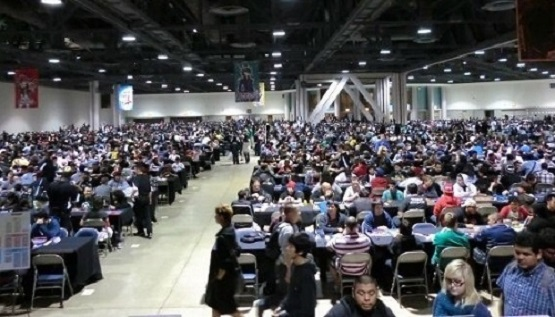

yugioh Aside from all the cards, it's a super fun game and you should probably learn it first.
Watch this video to learn how to play How to play
You can play online at the website: Dueling Network. I don't recommend this. The games are not automated, and there's nothing to prevent you cheating. It's pretty much guaranteed that all new players cheat by accident, and your opponents won't take very kindly by this. Instead, I recommend downloading YGOPro. It's a program that lets you play online, and it's automated! In terms of getting cards in real life, buying Structure Decks is the way to go for a beginner. There's a HERO Structure Deck coming out in a few days, which I'd recommend. Look up "Masked Heroes Deck Profile" on Youtube to give you a card list to use, then play with it on YGOPro. If you like it enough that you want to make the deck in real life, a good starting point would be to buy 3 copies of the structure deck to get 3 copies of the important cards you'll need. If you have any other questions, feel free to ask. Also you can go to Yugioh101, which I'm sure many people will tell you to do.
| Price | When the card was made | |
|---|---|---|
| Gold Sarcophagus | $2,474 | April 18, 2000 |
| Crush Card Virus | $1,372 | September 30, 1996 |
| Shrink | $1,200 | October 24, 1996 |
| Dark Magician Girl | $1,100 | November 17, 1995 |